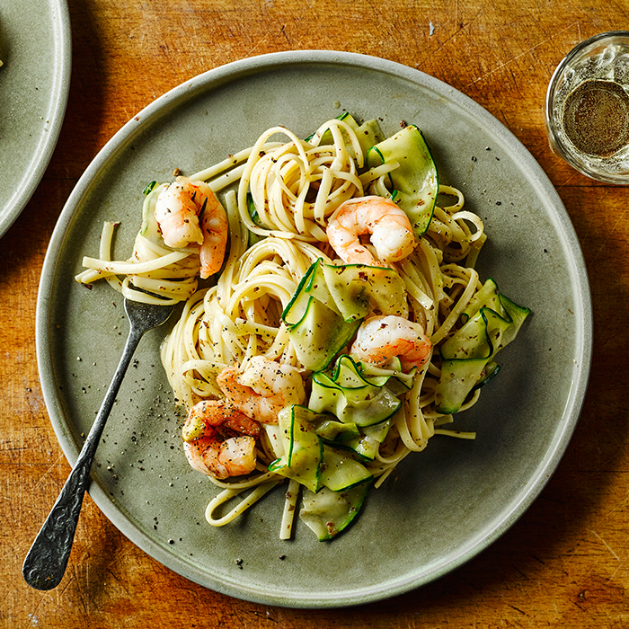

Lemony Prawn and Courgette Tagliatelle

Description
Make this king prawn and courgette tagliatelle in just 20 minutes.
It's full of garlic, lemon and chilli, and it's healthy too, so it's great for busy weeknights
Ingredients
- 2 tbps olive oil
- 2 courgettes, trimmed and coarsely grated
- 1 large garlic clove, finely grated
- 1 small red chilli, finely chopped
- 180g tagliatelle
- 150g raw king prawns, peeled and deveined
- 1 lemon, zested and juiced
- 1/2 a small bunch of parsley, finely chopped
Steps
- Heat the oil in a frying pan and fry the courgette for 4-5 mins, then stir through the garlic and chilli.
- Cook the tagliatelle following pack instructions. Drain, reserving some of the cooking water.
- Add the prawns to the courgette mixture, and cook for 2 mins until pink.
- Toss through the tagliatelle, the lemon zest and juice, parsley, some seasoning and a splash of the reserved cooking water.
- Divide between bowls and serve.